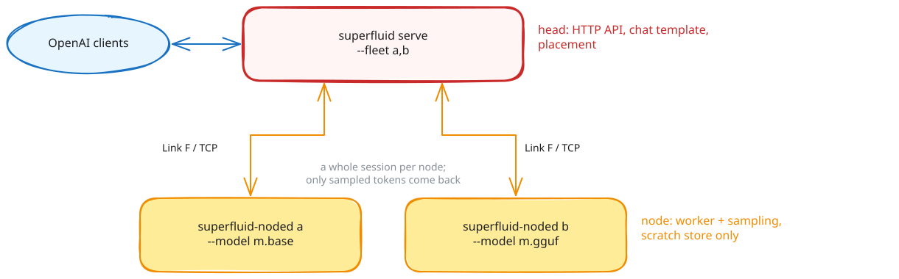

Distributed serving (fleet mode)¶
Fleet mode runs one superfluid as a head that owns the HTTP API and the chat template, and one or more node agents (superfluid-noded) that each own a model and sample its tokens. Each request is placed as a whole session on one node; only sampled tokens cross the network.
Warning
Fleet mode is early. The head keeps no durable session log and serves two routes.

Join a node¶
On the head, make the token once and start serving with a listener for nodes:
superfluid fleet token # prints the token; kept at ~/.superfluid/fleet/token
superfluid serve unsloth/Qwen3.8-27B-GGUF:UD-Q4_K_M --http 0.0.0.0:8453 --fleet-listen 0.0.0.0:8454
On each node:
The node finds the head on the local network (_superfluid-fleet._tcp, or give <host:port> as the first argument), pulls the model as serve would, serves it over an encrypted link, and dials again whenever the link drops, looking for the head anew when it moved. The head lists a node that joined as joined:<identity> and places sessions on it like any other; a node that leaves is waited for, not dialed. The head matches nodes by model name: a node names its model as the head announced it, so the same model under another id or path still matches; --model-name overrides that. A head with no token takes nodes from its own machine only.
| flag | default | meaning |
|---|---|---|
--model <path\|id> |
required | the model; an id is pulled first |
--token <value> |
$SUPERFLUID_HOME/fleet/token |
the head's token, kept at that path |
--runtime <id> |
by format | the runtime |
--max-context <N> |
sized for this device | the node's window |
--max-batch <N> |
8 | the node's lanes |
--identity <name> |
the host name | the name in the head's logs |
--model-name <id> |
what the head announces, else the model's id | the name the head matches on |
--offline |
off | pull nothing |
A node that joins opens one connection per lane, and the head runs one generation per connection, so a node runs as many generations at once as it has lanes, joined or dialed.
Run a node by hand¶
The node loads the model as superfluid serve does: an id is pulled, the runtime that reads it is installed if it never was, and the window is sized for the device. It checks its token and binds its port first, so a node that would be refused stops before it downloads anything. It then prints what it serves:
superfluid-noded: runtime llamacpp serves /…/Qwen3.8-27B-UD-Q4_K_M.gguf: context window 40960 tokens (sized for this device), 8 lanes
superfluid-noded: node 'box-a' serving 'unsloth/Qwen3.8-27B-GGUF' on 100.64.0.2:8454 (Link F/TCP)
| flag | default | meaning |
|---|---|---|
--listen <ip:port> |
0.0.0.0:8454 |
where the head connects |
--model <path\|id> |
required | the model; an id is pulled first |
--runtime <id> |
by format | basert, llamacpp or mlx; --engine is the same flag, and --engine mock serves the test engine |
--model-name <id> |
the model's id | the name the head matches on; set it the same on every node |
--max-context <N> |
sized for this device | the node's window, floor 512 |
--max-batch <N> |
8 | the node's lanes |
--identity <name> |
the host name | the name in the head's logs |
--offline |
off | pull and install nothing |
--auth-file <path> |
$SUPERFLUID_HOME/fleet/token |
the fleet token; with it the link is encrypted and both ends are checked |
--insecure-no-auth |
off | accept any peer on a non-loopback address |
--handshake-timeout-ms <N> |
10000 | time a connecting head has to say hello |
--idle-timeout-ms <N> |
120000 | drop an idle connection |
Nodes can run different runtimes for the same model, such as a Mac on baseRT with the .base build and a Linux box on llama.cpp with a GGUF. Give each the same --model-name. The head sends token ids, so the builds must share the model's tokenizer, which builds of one model do; nothing checks this yet. Each node's answers follow its own build's quantization.
superfluid fleet token makes the token (32 random bytes as hex, owner-readable) at $SUPERFLUID_HOME/fleet/token on the head; copy that file, or its value, to the same path on each node. With a token the link between head and node is encrypted (Noise, keyed by the token) and a peer with another token is refused at the handshake. A node bound off loopback refuses to start without a token unless --insecure-no-auth is given. A node has no sampling flags and no durable state: superfluid-noded keeps its session store under the system temp dir, and node join under $SUPERFLUID_HOME/fleet/nodes/<identity>, emptied at each start.
Run the head¶
superfluid serve /models/qwen.base --http 0.0.0.0:8453 \
--fleet 100.64.0.2:8454,100.64.0.3:8454 \
--fleet-auth /etc/superfluid/fleet.key
At start the head connects to every node and reports each one, or why it cannot reach it:
superfluid: fleet node 'box-a' at 100.64.0.2:8454: qwen, context window 32768 tokens, 8 lanes
superfluid: fleet node 100.64.0.3:8454: closed the connection at the handshake; check that --fleet-auth holds the key in the node's --auth-file; retrying it every 10 s
superfluid: context window 32768 tokens (the largest node's)
| flag | default | meaning |
|---|---|---|
--fleet <host:port>[,...] |
nodes the head dials; optional with --fleet-listen |
|
--fleet-listen <addr:port> |
off | take nodes that join, announced on the local network |
--fleet-auth <path> |
$SUPERFLUID_HOME/fleet/token |
the fleet token; without one the links are not encrypted |
--fleet-policy |
load-aware |
load-aware, least-loaded or round-robin |
--fleet-pool-high <pct> |
90 | load-aware avoids nodes at or above this KV occupancy |
--fleet-conns-per-node <N> |
the node's lanes | connections to each node in --fleet, and so concurrent generations there |
The head loads no engine but still reads the model for its tokenizer and chat template; its model id must match what the nodes advertise (the head warns about a node that serves another). Its context window is the nodes', so it needs no --max-context. It logs where each session is placed and every move to another node. --dialect, --tool-call-parser and --temperature/--top-p/--top-k/--min-p apply on the head. --api-key, --key-policy and --rate-limit protect its listener; a policy's class and max_class do not apply, since the head has no scheduler.
Refused on the head (set them on each node's own superfluid serve): --class-lanes, --http-default-qos, --no-http-qos-header, --http-allow-batch-invariant, --spec-max-temperature, --fim-model, --repeat-penalty, --otlp-endpoint.
Placement policies¶
| policy | how it picks |
|---|---|
load-aware (default) |
prefers nodes whose window fits the prompt, skips nodes above --fleet-pool-high, then the lowest estimated completion time from each node's reported rates. A node measures its rates only while it is generating, so an idle node keeps the speed it showed when busy; one that has not generated yet counts at the mean of the others |
least-loaded |
fewest sessions in progress plus requests in flight on that node, whatever its speed |
round-robin |
rotate through capable nodes; use it to prove a fleet is distributing |
A prompt no node can hold is refused with context_length_exceeded.
What the head serves¶
POST /v1/chat/completions, streaming or not, with tools (OpenAI API).GET /v1/models: the one model the fleet serves.
Refused with 400: non-zero presence_penalty/frequency_penalty, a repeat_penalty other than 1.0, ignore_eos, stream_options.continuous_usage_stats, and image or audio parts. Not read: logprobs, logit_bias, response_format, tool_choice. There is no /health, /metrics, Anthropic, Ollama, embeddings, files or batches surface on the head. A generation has a ten-minute wall-clock ceiling.
Failure handling¶
| event | what happens |
|---|---|
| node fails mid-stream | delivered tokens become context; the session is re-placed on the next capable node, which generates the rest. No token is delivered twice |
| node unreachable | skipped; the head tries it again every 10 s and uses it once it answers |
| node restarts | comes back empty; the head reconnects and new placements use it |
| connection idle | the head sends a keepalive every 15 s, under the node's --idle-timeout-ms; a connection a node closed anyway is replaced before it is used |
| head restarts | in-flight requests fail; placement state is lost |
| head misses a lease renewal | the node fences the session and emits nothing more |
Limits¶
- One model per fleet.
- No KV transfer between nodes: a failover re-prefills.
- No QoS class crosses the wire.